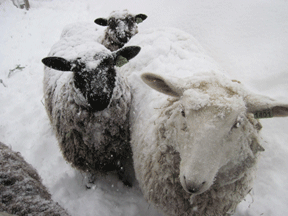

| Where did they go? Thanks to Pam Child of Hatchtown Farm for this wonderful story. |
||||||||||
| Winter lodging for our new sheep was a three-sided wooden shed with the front open to the south. On sunny days it was filled with warm light. Deep straw bedding kept the sheep comfortable in the cold weather. In early winter, there was a huge snow storm. As it was our first winter with sheep, I was concerned about them, and wanted to know if they were safe. That meant my going out in the storm! I bundled up in all my warm outside clothes and pulled on my boots. With my trusty flashlight, I trudged down to the shed through the deep snow. Shining the light into the shed, I gasped when I saw it was empty. Where were the sheep? I slowly turned around, aiming the light all over the paddock. On the far side were big mounds of snow scattered around. It must be the sheep! They were completely covered with over eight inches of snow, and were all wearing snow-cone hats! |
||||||||||
| Sheep are very funny about the snow. Our sheep don’t seem to mind it at all, and prefer to be outside in the snow. |
||||||||||
|  | ||||||||||